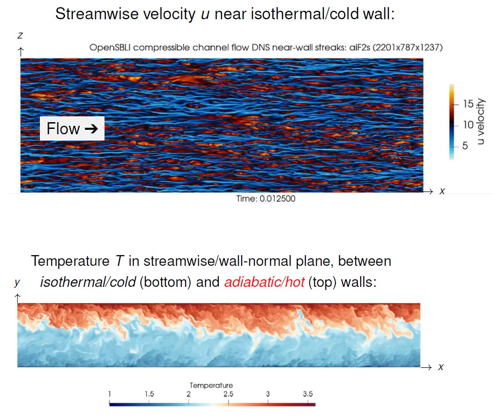

Public Access (formerly Langley Research Center)Turbulence Modeling Resource |
DNS: Supersonic Plane-Channel Flow with One Isothermal and One Adiabatic Wall
Return to: Data from DNS - Intro Page
Return to: Turbulence Modeling Resource Home PageThe data on this page were provided by G. Coleman.
Direct numerical simulation is used to investigate the turbulent Prandtl number (Prt)
above cold (isothermal) and hot (adiabatic) walls in a family of supersonic channel
flows. A range of Reynolds numbers and mean temperature/density variations is
considered.
Additional details concerning the data,
code, and computational methodology can be found in:

The DNS data files include mean and turbulence statistics.
The data for all cases are provided below:
Return to: Data from DNS - Intro Page
Recent significant updates:
Page Curators: Christopher Rumsey,
Ethan Vogel,
Clark Pederson
Last Updated: 04/13/2023